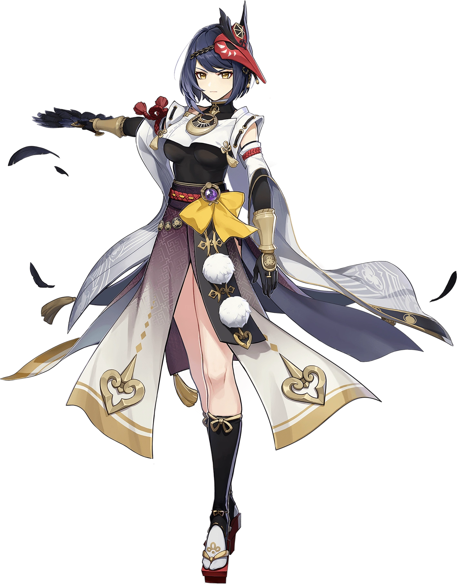

Se a Shogun é o trovão acima do céu, Kujou Sara é o raio do qual é difícil se proteger. O relâmpago aparece primeiro, e então haverá um trovão aterrorizante. Como filha adotiva do Clã Kujou, ela sempre foi muito séria. As pessoas sempre tiveram a ideia de que Kujou Sara é alguém muito determinada e não muito sorridente. Essa jovem leal, que carrega pesadas responsabilidades sobre os ombros, honesta com seus deveres, ainda não é tão fria e indiferente quanto parece. Determinada a deixar de lado seus próprios sentimentos para seguir em frente, ela fez a escolha de desistir de uma parte do coração.